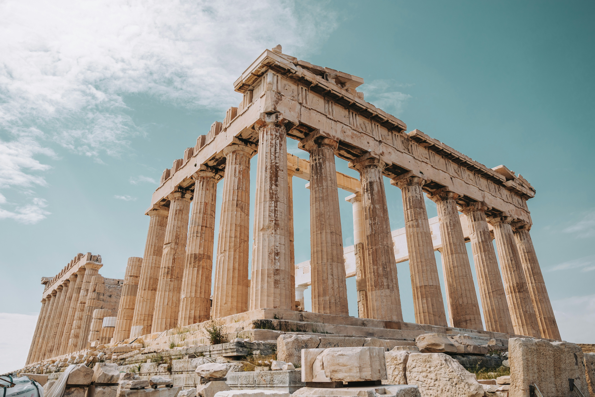
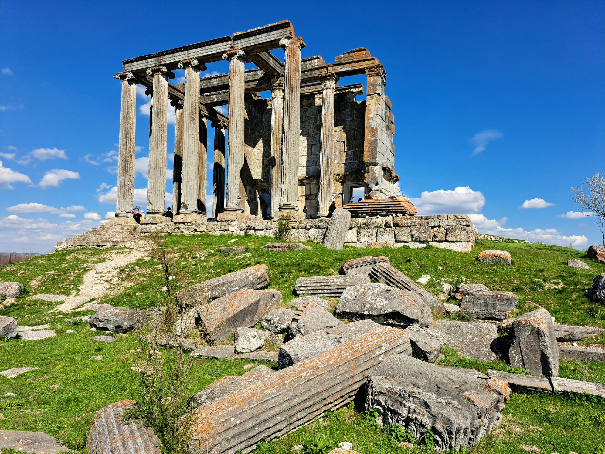
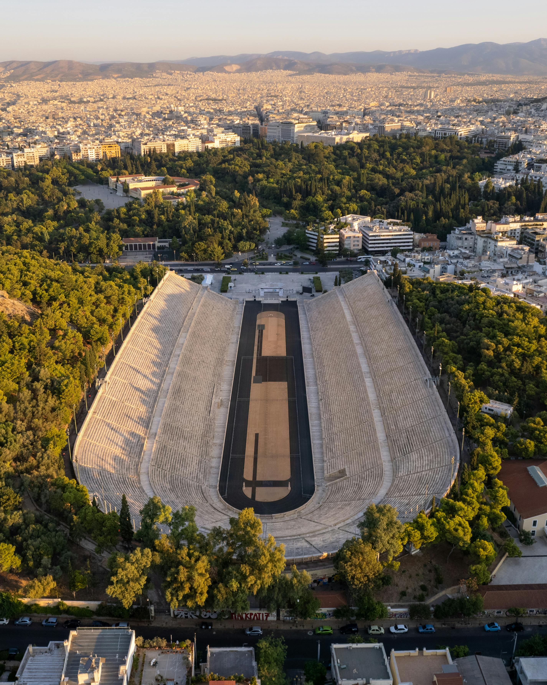
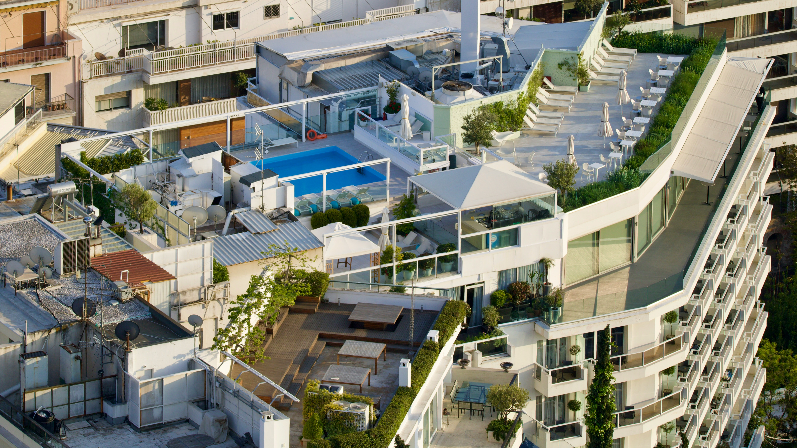

Athens is known as the birthplace of democracy and home to
legendary philosophers like Socrates and
Plato. It is a city layered with ancient ruins,
mythology, and philosophical thought that shaped much of Western
civilization. The
UNESCO
listed Acropolis stands as a powerful symbol of the city’s
ancient glory. Athens played a central role in the development of art,
architecture, politics, and theater. Walking through its historic
streets today reveals a blend of ancient monuments and modern life,
offering visitors a deep connection to the past. The city continues to
attract travelers from around the world who seek to explore its
timeless beauty and enduring legacy.
2. Local Historical attractions of Athens
Acropolis of Athens: is one of the most iconic
ancient landmarks in the world. Built in the 5th century BCE, it
served as the religious and cultural heart of the city. The most
famous structure on the Acropolis is the Parthenon, a temple
dedicated to the goddess Athena. Today, the Acropolis stands as a
powerful reminder of ancient Greek civilization, democracy, and
architectural mastery.

Acropolis ruins. Photo by Unsplash
Temple of Olympian Zeus, also known as the Olympieion, is one of the largest ancient
temples ever built in Greece. Construction began in the 6th
century BCE but was not completed until the 2nd century CE under
the Roman Emperor Hadrian. Dedicated to Zeus, the king of the
gods, the temple once featured 104 massive Corinthian columns,
though only a few remain standing today. Despite its ruined state,
the sheer scale of the structure still inspires awe. The temple
reflects the grandeur of both Greek and Roman influence and serves
as a testament to Athens' rich architectural history.

Temple of Olympian Zeus. Photo by Pexels
The Panathenaic Stadium is a historic marble
stadium located in the heart of Athens, Greece. Originally built
in the 4th century BCE for the Panathenaic Games, it was later
rebuilt entirely in white marble by the Romans around 144 CE. It
is the only stadium in the world made completely of marble. The
stadium was revived in the 19th century and famously hosted the
first modern Olympic Games in 1896. Today, it remains a symbol of
Olympic heritage and classical architecture. Visitors can walk its
track and stands, experiencing the grandeur of ancient and modern
sports history in one place.

Panathenaic Stadium. Photo by Pexels
3. How to Get There
Athens is easily accessible by air, with the Athens International
Airport (Eleftherios Venizelos) serving as the main gateway to the
city. From the airport, travelers can reach the city center by metro,
bus, taxi, or airport shuttle, with the metro being the fastest and
most convenient option. Once in the city, the historical sites such as
the Acropolis, Temple of Olympian Zeus, and Panathenaic Stadium are
all within reach by metro, tram, or a short walk. Athens has a
reliable and affordable public transportation system, making it simple
for visitors to explore the city's many landmarks.
4. Where to Stay
Athens offers a wide range of accommodation options to suit every
budget. For travelers looking to save money,
BedBox Hostel provides a modern and comfortable stay
in a central location, perfect for backpackers and solo visitors.
Those seeking a balance between comfort and cost can choose the
Electra Hotel, which offers excellent service,
stylish rooms, and proximity to historical attractions. For a
luxurious experience, the iconic
Hotel Grande Bretagne is an excellent choice,
featuring elegant interiors, world-class amenities, and a rooftop view
of the Acropolis. No matter your travel style, Athens has the perfect
place to stay. Here are some hotel recommendations according to
budget:
Budget: BedBox Hostel
Mid-range: Electra Hotel
Luxury: Hotel Grande Bretagne (view of Acropolis)

Hotel in Athens. Photo by Unsplash
5. What and Where to Eat
Athens offers a rich culinary experience full of traditional Greek
flavors. A must-try is moussaka, a layered dish of
eggplant, minced meat, and béchamel sauce. For a quick bite, grab a
gyro or souvlaki, both popular
street foods made with grilled meat, pita bread, and tzatziki sauce.
Seafood lovers will enjoy fresh grilled fish and calamari from local
tavernas. Don’t miss out on Greek salad topped with
feta cheese and olives. For dessert, try baklava, a
sweet pastry made with layers of filo, nuts, and honey syrup. Athens
is truly a paradise for food lovers.